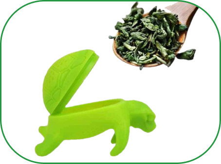

Madame Tor-thé

Cette tortue va révolutionner votre
manière de boire du thé!

Faites une pause gourmande avec cet
infuseur à thé en forme... de tortue !
Ludique et écoresponsable, elle saura
vous accompagner chaque jour.
Sa carapace se remplit de votre thé préféré. Accrochée au rebord de votre tasse, la tortue plonge dans l'eau chaude et laisse infuser les arômes pour une boisson parfumée.